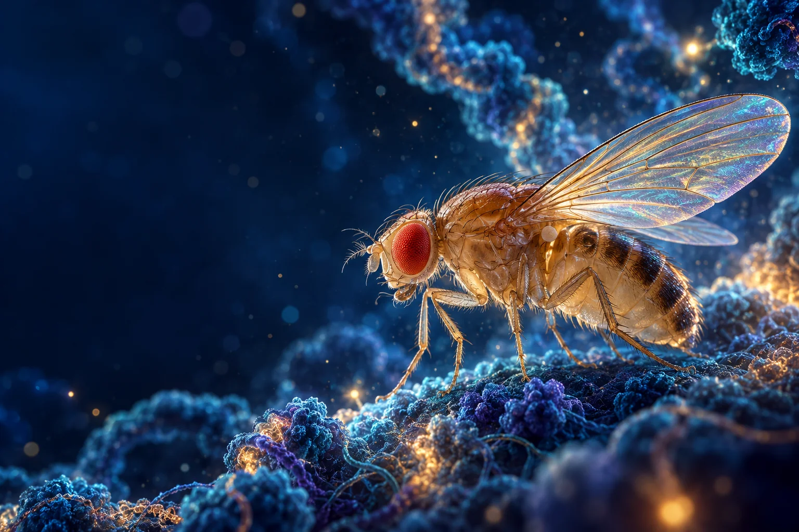

Maintaining gene activation
How do trxG proteins and their partners keep developmental genes active through successive cell divisions?
We study the molecular machinery that keeps genes active or silent across cell divisions—and how those stable identities might be changed.

Drosophila melanogaster · illustrative artworkEvery cell carries essentially the same genome. What makes a neuron different from a muscle cell—and keeps it that way?
Cell identities depend on patterns of gene expression passed on as cells divide. Polycomb group (PcG) proteins help maintain gene repression, while trithorax group (trxG) proteins help maintain gene activation. We investigate how these systems preserve transcriptional memory during development.
Using Drosophila melanogaster, cell based reporter assays, genetics, functional genomics and molecular approaches, we identify the factors that shape this memory and ask how signaling pathways influence it.
How do trxG proteins and their partners keep developmental genes active through successive cell divisions?
How do PcG and trxG systems interact and prevent each other from maintaining activation or repression, respectively?
Which cell signaling pathways modulate the chromatin regulators that maintain cell fate?
Our cell based reporter enabled ex vivo kinome-wide and genome-wide RNAi screens. Follow up work has established new roles for these factors in gene regulation.
A kinome wide screen identified Ballchen as a factor in trxG mediated gene activation. Later work connected BALL and CBP to H3K27 acetylation at active genes.
Read the research ↗Mask exhibits trxG like behavior and associates with H3K27ac marked chromatin, pointing to a link between gene activation and a protein also known for signaling roles.
Read the research ↗Research on the chaperonin subunit CCT7 revealed an interaction with Polycomb that contributes to the maintenance of gene silencing in flies.
Read the research ↗Our genome wide RNAi screen identified Enok as a trithorax group regulator, extending the set of factors involved in keeping target genes active.
Read the research ↗Professor Muhammad Tariq founded the Biology program at LUMS in 2009 and established an epigenetics research group centered on the fruit fly. The lab has built a sustained research and training program in a challenging resource environment.
The Fly Room at SBASSE is the first fruit fly research laboratory in Pakistan. Its experimental work and hands on teaching have made Drosophila a living part of biology education at LUMS.
A selection tracing the path from molecular chaperones and functional screens to chromatin regulation.
Our work is inseparable from the students who have shaped the research and carried its methods forward. In the early years, before our school had an MS or PhD program, undergraduate Zain Umer created the cell based reporter during her 2011 BS senior project. That reporter was later used in our reverse genetics screens. We owe our success to the BS, MS and PhD students and postdoctoral researchers who have built the Tariq Lab at LUMS.
Professor of Molecular Biology · Syed Babar Ali School of Science and Engineering, LUMS
LUMS faculty profile ↗Since 2009, the lab has trained researchers at every level, from undergraduate theses to doctoral work. Their contributions underpin the reporter systems, genetic screens and mechanistic studies featured here.
Mentorship totals provided by the lab, as of 2026.
We welcome scientific conversations and collaboration around epigenetics, developmental gene regulation and cell fate.
LUMS
LUMS
LUMS
LUMS
LUMS
LUMS
LUMS
LUMS
LUMS
LUMS
LUMS
LUMS
LUMS
LUMS
LUMS
UET, Lahore
In lab: 2009-2013CEMB, PU
In lab: 2011-2013Hannover, Germany
In lab: 2013-2016NIBGE, Faisalabad
In lab: 2015-2016NIAB, Faisalabad
In lab: 2015-2016NIH, USA
In lab: 2020Formulatrix, Pakistan
In lab: 2020NIH, USA
In lab: 2022Pakistan
In lab: 2022NIH, USA
In lab: 2023Since joining LUMS in 2009, Professor Tariq has helped develop undergraduate and graduate biology teaching. His courses connect genetics and molecular methods with developmental biology and epigenetic gene regulation.
Courses taught at LUMS, as listed on the faculty profile ↗. Current offerings may vary.
Tariq Lab · Department of Life Sciences, SBASSE · LUMS, Lahore, Pakistan